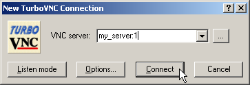
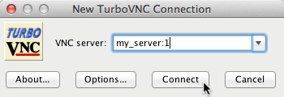
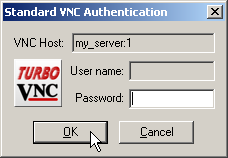
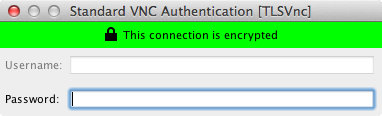
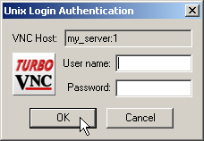
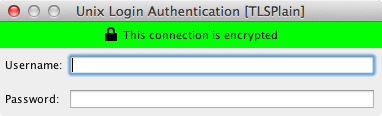

User’s Guide for TurboVNC 2.1.2
This document and all associated illustrations are licensed under the Creative Commons Attribution 2.5 License. Any works that contain material derived from this document must cite The VirtualGL Project as the source of the material and list the current URL for the TurboVNC web site.
The official TurboVNC binaries contain libjpeg-turbo, which is based in part on the work of the Independent JPEG Group.
The TurboVNC Windows packages include PuTTY, which is released under this license.
TurboVNC is licensed under the GNU General Public License, v2.
This document assumes that TurboVNC will be installed in the default
directory (/opt/TurboVNC on Linux/Un*x and Mac systems and
c:\Program Files\TurboVNC on Windows systems.) If
your installation of TurboVNC resides in a different directory, then
adjust the instructions accordingly.
TurboVNC is a derivative of VNC (Virtual Network Computing) that is tuned to provide peak performance for 3D and video workloads. TurboVNC was originally a fork of TightVNC 1.3.x, and on the surface, the X server and Windows viewer still behave similarly to their parents. However, the current version of TurboVNC contains a much more modern X server code base (based on X.org 7.7) and a variety of other features and fixes, including a high-performance zero-install Java viewer. TurboVNC compresses 3D and video workloads significantly better than the “tightest” compression mode in TightVNC 1.3.x while using only typically 15-20% of the CPU time of the latter. Using non-default settings, TurboVNC can also match the best compression ratios produced by TightVNC 1.3.x for 2D workloads (see Section 7.2.)
All VNC implementations, including TurboVNC, use the RFB (remote framebuffer) protocol to send “framebuffer updates” from the VNC server to any connected “viewers.” Each framebuffer update can contain multiple “rectangles” (regions that have changed since the last update.) As with TightVNC, TurboVNC analyzes each rectangle, splits it into multiple “subrectangles”, and attempts to encode each subrectangle using the “subencoding type” that will provide the most efficient compression, given the number of unique colors in the subrectangle. The process by which TurboVNC does this is referred to as an “encoding method.” A rectangle is first analyzed to determine if any significant portion of it is solid, and if so, that portion is encoded as a bounding box and a fill color (“Solid subencoding.”) Of the remaining subrectangles, those with only two colors are encoded as a 1-bit-per-pixel bitmap with a 2-color palette (“Mono subencoding”), those with low numbers of unique colors are encoded as a color palette and an 8-bit-per-pixel bitmap (“Indexed color subencoding”), and subrectangles with high numbers of unique colors are encoded using either JPEG or arrays of RGB pixels (“Raw subencoding”), depending on the encoding method. zlib can optionally be used to compress the indexed color, mono and raw subrectangles.
Part of TurboVNC’s speedup comes from the use of libjpeg-turbo, the same high-speed SIMD-optimized JPEG codec used by VirtualGL. However, TurboVNC also eliminates the CPU-hungry smoothness detection routines that TightVNC uses to determine whether a subrectangle is a good candidate for JPEG compression, and TurboVNC’s encoding methods tend to favor the use of JPEG more, since it is now generally the fastest subencoding type. Furthermore, TurboVNC eliminates buffer copies, it maximizes network efficiency by splitting framebuffer updates into relatively large subrectangles, and it uses only the zlib compression levels that can be shown to have a measurable performance benefit.
TurboVNC is the product of extensive research, in which many different permutations of the TightVNC encoder were benchmarked at the low level against a variety of captured RFB sessions that simulate real-world application workloads, both 2D and 3D. For more information on the research leading to TurboVNC’s encoder design, see this report.
In addition to high performance, other notable features of TurboVNC include:
TurboVNC, when used with VirtualGL, provides a highly performant and robust solution for remotely displaying 3D applications over all types of networks.
On “modern” hardware, TurboVNC is capable of streaming 50+ Megapixels/second over a 100 Megabit/second local area network with perceptually lossless image quality. TurboVNC can stream between 10 and 12 Megapixels/second over a 5 Megabit/second broadband connection at reduced (but usable) image quality.
TurboVNC is compatible with other VNC distributions. See Chapter 10 for more information. The official TurboVNC binaries can be installed onto the same system as other VNC distributions without interference.
| Server (x86) | Server (x86-64) | Client | |
|---|---|---|---|
| Recommended CPU |
|
Dual processors or dual cores recommended | For optimal performance, the CPU should support SSE2 extensions. |
| O/S | TurboVNC should work with a variety of Linux distributions, FreeBSD, and Solaris, but currently-supported versions of Red Hat Enterprise Linux (and its work-alikes, including CentOS, Oracle Linux, and Scientific Linux), Ubuntu LTS, and SuSE Linux Enterprise tend to receive the most attention from the TurboVNC community. | ||
| Other |
|
||
| Client | |
|---|---|
| Recommended CPU | Any Intel-based Mac |
| O/S | OS X 10.5 “Leopard” or later (OS X 10.7 “Lion” or later recommended) |
| Other Software | Oracle Java 8u40 or later, or Java for OS X (see Section 7.6.3 for more details) |
| Client | |
|---|---|
| Recommended CPU | For optimal performance, the CPU should support SSE2 extensions. |
| O/S | Windows 2000 SP1 or later |
| Other | For optimal performance, the client display should have a 24-bit or 32-bit (True Color) color depth. |
On some Linux distributions, most notably Fedora 10 and later, the basic
X11 bitmap fonts are not installed by default. Thus, it is necessary to
install the xorg-x11-fonts-misc package on these
distributions prior to starting a TurboVNC session for the first time.
Otherwise, TurboVNC will fail with the following error:
Fatal server error: could not open default font 'fixed'
rpm -U turbovnc*.rpm
dpkg -i turbovnc*.deb
Download the appropriate binary package, as above, then execute the following commands:
mkdir ~/turbovnc
cd ~/turbovnc
rpm2cpio {full path of turbovnc*.rpm} | cpio -idv
dpkg-deb --extract {full path of turbovnc*.deb} ~/turbovnc
Add ~/turbovnc to any paths specified in this document. Note that the TurboVNC security configuration file will not work when TurboVNC is installed in this manner.
TurboVNC-{version}.dmg)
from the
Files
area of the
TurboVNC
SourceForge project page.
This package requires Oracle Java.
This package can also be used on OS X 10.7-10.9, but the “AppleJava” package (see below) will likely perform better on such systems. See Section 7.6.3 for more details.
TurboVNC.pkg inside the disk
image. Follow the instructions to install the Mac TurboVNC Viewer.
TurboVNC-{version}-AppleJava.dmg)
from the
Files
area of the
TurboVNC
SourceForge project page.
This package requires Java for OS X, which was pre-installed on versions of OS X prior to 10.7 (but which can be installed on later OS X versions by downloading the Java for OS X package from Apple Support.) It should not be used on OS X 10.10 and later. See Section 7.6.3 for more details.
TurboVNC.pkg inside the disk
image. Follow the instructions to install the Mac TurboVNC Viewer.
TurboVNC-{version}.exe
for 32-bit systems or
TurboVNC64-{version}.exe
for 64-bit systems) from the
Files
area of the
TurboVNC
SourceForge project page.
If you are using a Linux/Un*x platform for which there is not a
pre-built TurboVNC binary package available, then log in as root,
download the TurboVNC source tarball
(turbovnc-{version}.tar.gz)
from the
Files
area of the
TurboVNC
SourceForge project page, uncompress
it, cd turbovnc-{version}, and
read BUILDING.txt for further instructions on how to build
TurboVNC from source.
As root, issue one of the following commands:
rpm -e turbovnc
dpkg -r turbovnc
Open the “Uninstall TurboVNC” application, located in the “TurboVNC” Applications folder. You can also open a terminal and execute:
sudo /opt/TurboVNC/bin/uninstall
Use the “Programs and Features” applet in the Control Panel (or the “Add or Remove Programs” applet if you are running Windows XP), or select “Uninstall TurboVNC” in the “TurboVNC” Start Menu group.
ssh {user}@{server}
"c:\program files\turbovnc\putty" {user}@{server}
Replace {user} with your username on the TurboVNC
server machine and {server} with the hostname or
IP address of that machine.
/opt/TurboVNC/bin/vncserver
Desktop 'TurboVNC: my_server:1 (my_user)' started on display my_server:1
/opt/TurboVNC/bin/vncviewer
| Windows TurboVNC Viewer | Linux/Un*x/Mac (Java) TurboVNC Viewer |
|---|---|
|  |  |
| Windows TurboVNC Viewer | Linux/Un*x/Mac (Java) TurboVNC Viewer | |
|---|---|---|
| Standard VNC Authentication Dialog |  |  |
| Unix Login Authentication Dialog |  |  |
Closing the TurboVNC Viewer disconnects from the TurboVNC session, but the TurboVNC session will remain running on the TurboVNC server machine (as will any applications that you may have started within the session), and you can reconnect to the session at any time.
To kill a TurboVNC session:
c:\Program Files\TurboVNC\putty.exe on
Windows clients), log into the server machine that is running the
TurboVNC session you want to kill.
/opt/TurboVNC/bin/vncserver -kill :{n}
Replace {n} with the X display number of the
TurboVNC session you want to kill.
To list the X display numbers and process ID’s of all TurboVNC sessions currently running under your user account on a particular server machine, type the following command:
/opt/TurboVNC/bin/vncserver -list
When a TurboVNC session is created, it automatically launches a miniature web server that serves up the Java TurboVNC Viewer as either an applet or a Java Web Start app. This allows you to easily connect to the TurboVNC session from a machine that does not have the TurboVNC Viewer installed locally. The Java TurboVNC Viewer, when launched in this manner, can use the libjpeg-turbo JNI library to accelerate JPEG decoding, if the library is available on the client machine. If one of the official TurboVNC binary packages is installed on the server, then it will automatically send the appropriate x86 or x86-64 libjpeg-turbo JNI library for Linux, OS X, or Windows clients when launching the TurboVNC Viewer using Java Web Start. If using the Java TurboVNC Viewer as an applet, then you can install one of the official libjpeg-turbo packages on the client machine to accelerate JPEG decoding.
To use the Java TurboVNC Viewer in a web browser, point your web browser to:
http://{turbovnc_server}:{5800+n}
where {turbovnc_server} is the hostname or IP
address of the TurboVNC server machine, and n is
the X display number of the TurboVNC session to which you want to
connect.
Example: If the TurboVNC session is occupying X display
my_server:1, then point your web browser to:
http://my_server:5801
This will download a JNLP file to your computer, which you can open in
Java Web Start. Add /applet to the URL to launch the
viewer as a Java applet instead (as of this writing, browsers are
starting to do away with Java plugins, so running the viewer as an
applet is more of a legacy feature.)
You can add viewer parameters to the URL using the following format:
http://{turbovnc_server}:{5800+n}?{param1}={value1}&{param2}={value2}
Examples:
http://my_server:5801/applet?embed=1&tunnel=1
will run the viewer as an applet in the browser window and tunnel the VNC connection through SSH.
http://my_server:5801?tunnel=1&samp=2x&quality=80
will run the viewer as a JWS app, tunnel the VNC connection through SSH, and enable Medium-Quality JPEG.
NOTE: As of Java 7 Update 51, self-signed JARs are not allowed to run in the Java browser plug-in or JWS by default. This is not an issue if you are using the official TurboVNC binary packages, but if you are building a self-signed version of the Java TurboVNC Viewer for development purposes, then you will need to add http://{turbovnc_server}:{http_port} (for example, http://my_server:5801) to Java’s Exception Site List, which can be found under the “Security” tab in the Java Control Panel.
NOTE: On some newer OS X systems, downloading a JNLP file may result in an error: “xxxxxxxx.jnlp can’t be opened because it it from an unidentified developer.” To work around this, you can either open the JNLP file directly from your Downloads folder, or you can change the application security settings in the “Security & Privacy” section of System Preferences to allow applications downloaded from anywhere.
Accessing the Java TurboVNC Viewer through TurboVNC’s built-in HTTP server, as described above, is a quick and easy way of running the TurboVNC Viewer on machines that don’t already have a VNC viewer installed (for instance, for the purpose of collaborating with colleagues who don’t normally use TurboVNC.)
To set up a large-scale zero-install deployment of the Java TurboVNC Viewer, it is desirable to serve up the JAR files from a dedicated web server. When deployed using JWS, the Java TurboVNC Viewer provides all of the advantages of a standalone native viewer, including native levels of performance on most platforms (see notes regarding performance on Mac platforms.)
For the purposes of this guide, it is assumed that the reader has some knowledge of web server administration.
VncViewer.jar) into
a directory on your web server. libjpeg-turbo-{version}-jws.zip from libjpeg-turbo 1.3.0 or
later (available at
http://sourceforge.net/projects/libjpeg-turbo/files.)
Note that only the JARs included in the official TurboVNC packages are
signed using an official code signing certificate. jarsigner to sign all of the JARs with this certificate.
The specifics of this are left as an exercise for the reader.
TurboVNC.jnlp in the same directory as
VncViewer.jar on the web server, and give it the following
contents:
<?xml version="1.0" encoding="utf-8"?>
<jnlp codebase="{turbovnc_url}">
<information>
<title>TurboVNC Viewer</title>
<vendor>The VirtualGL Project</vendor>
</information>
<resources>
<j2se version="1.6+" java-vm-args="-server -Dsun.java2d.d3d=false"/>
<jar href="VncViewer.jar"/>
</resources>
<security>
<all-permissions/>
</security>
<resources os="Mac OS X">
<nativelib href="ljtosx.jar"/>
</resources>
<resources os="Windows" arch="x86">
<nativelib href="ljtwin32.jar"/>
</resources>
<resources os="Windows" arch="amd64">
<nativelib href="ljtwin64.jar"/>
</resources>
<resources os="Linux" arch="i386">
<nativelib href="ljtlinux32.jar"/>
</resources>
<resources os="Linux" arch="amd64">
<nativelib href="ljtlinux64.jar"/>
</resources>
<application-desc main-class="com.turbovnc.vncviewer.VncViewer"/>
</jnlp>
NOTE: {turbovnc_url} should be the absolute URL of the TurboVNC Viewer directory on the web server, e.g. http://my_server/turbovnc.
{turbovnc_url}/TurboVNC.jnlp in your browser to launch the
Java TurboVNC Viewer with full performance.
Normally, the connection between the TurboVNC Server and the TurboVNC Viewer is completely unencrypted, but securing that connection can be easily accomplished by using the port forwarding feature of Secure Shell (SSH.) After you have started a TurboVNC session on the TurboVNC server machine, open a new SSH connection into the TurboVNC server machine using the following command line:
ssh -L {5900+n}:localhost:{5900+n} {user}@{server}
"c:\program files\turbovnc\putty" -L {5900+n}:localhost:{5900+n} {user}@{server}
Replace {user} with your username on the TurboVNC
server machine and {server} with the hostname or
IP address of that machine. Replace n with the X
display number of the TurboVNC session to which you want to connect.
For instance, if you want to connect to display :1 on
server my_server using user account my_user,
you would type:
ssh -L 5901:localhost:5901 my_user@my_server
"c:\program files\turbovnc\putty" -L 5901:localhost:5901 my_user@my_server
After the SSH connection has been established, you can then launch the
TurboVNC Viewer and point it to
localhost:{n}
(localhost:1 in the above example.)
You can force PuTTY to use an IPv6 interface for the local end of the tunnel by replacing -L with -L6 in the above command line.
For LAN connections and other high-speed networks, tunneling the TurboVNC connection through PuTTY will reduce performance by as much as 20%.
-via and -tunnel Command-Line OptionsIf you are using the Java TurboVNC Viewer (which you are if you are
using a Mac, Linux, or Un*x platform), then you can simplify the above
by using the -via and -tunnel command-line
options, or the equivalent GUI options (located under the
“Security” tab in the Options dialog.) For instance, running
{vncviewer} -via {user}@{server} localhost:{n}
or
{vncviewer} -tunnel {user}@{server}
is the equivalent of running
/usr/bin/ssh -L {fp}:localhost:{5900+n} {user}@{server}
{vncviewer} localhost::{fp}
where {fp} is a free TCP port on the client
machine (this is automatically determined by the TurboVNC Viewer.)
In the above examples, {vncviewer} is the command used to launch the TurboVNC Viewer– /opt/TurboVNC/bin/vncviewer on Mac/Linux/Un*x systems or c:\Program Files\TurboVNC\vncviewer-java.bat if running the Java TurboVNC Viewer on Windows systems.
-tunnel can be used as a shortcut whenever the SSH and VNC
servers are the same machine. -via is more flexible, since
it allows you to specify the VNC server to which to connect. The VNC
server is specified from the point of view of the SSH server, which is
why we used localhost in the above example.
The command used to establish the SSH tunnel is configurable by way of environment variables. See Section 11.2 for more details.
NOTE: In this release of TurboVNC, the TurboVNC Viewer for Linux/Un*x and Mac platforms is actually the Java TurboVNC Viewer, which is packaged along with the libjpeg-turbo JNI library and necessary glueware to make the viewer behave and perform like a standalone native viewer. Since the Java TurboVNC Viewer contains an embedded SSH client, the via and tunnel parameters can also be used when the viewer is run as an applet or deployed using Java Web Start.
The Windows TurboVNC Viewer contains experimental support for the -via and -tunnel command-line options. Currently the use of these requires Cygwin or MSYS2, since those are the only known Windows SSH implementations that support detaching the SSH process once the tunnel has been established. When using -via or -tunnel, it is recommended that you use the console version of the Windows TurboVNC Viewer (cvncviewer.exe) rather than vncviewer.exe. Otherwise, a new console window will pop up and remain for the duration of the VNC connection. If using MSYS2, or if your Cygwin installation resides in a directory other than c:\cygwin, then set the VNC_VIA_CMD and VNC_TUNNEL_CMD environment variables appropriately (refer to Section 11.2.)
Passing an argument of -localhost to vncserver
will force the TurboVNC Server session to accept inbound connections
only from the server machine. This effectively forces SSH tunneling to
be used for remote connections. If the
no-remote-connections directive is set in the TurboVNC
security configuration file, then that has the effect of enabling the
-localhost option for all new TurboVNC sessions that are
started on the machine.
Passing an argument of -noreverse to vncserver
will disable the ability to make outbound (reverse) connections from the
TurboVNC Server session. If the no-reverse-connections
directive is set in the TurboVNC security configuration file, then that
has the effect of enabling the -noreverse option for all
new TurboVNC sessions that are started on the machine.
For more detailed instructions on the usage of TurboVNC:
man -M /opt/TurboVNC/man vncserver man -M /opt/TurboVNC/man Xvnc man -M /opt/TurboVNC/man vncconnect man -M /opt/TurboVNC/man vncpasswd
vncviewer.exe /? from a command prompt to get a full
list of supported command-line options and their descriptions.
/opt/TurboVNC/bin/vncviewer -?to display a full list of supported command-line options/parameters and their descriptions.
c:\Program Files\TurboVNC\vncviewer-java.bat -?to display a full list of supported command-line options/parameters and their descriptions.
The level of image compression in TurboVNC can be adjusted to balance the (sometimes conflicting) goals of high image quality and high performance. There are four options that control the manner in which TurboVNC compresses images:
These parameters can be adjusted by accessing the TurboVNC Viewer Options dialog box (click on the “Options” button in the “TurboVNC Connection” dialog box or, after connecting to the server, click on the Connection Options button in the toolbar.)
The TurboVNC Viewer provides five preset “encoding methods”, corresponding to the most useful combinations of the image compression options described above:
| Encoding method | Allow JPEG | JPEG image quality | JPEG chrominance subsampling | Compression level | Notes |
|---|---|---|---|---|---|
| “Tight + Perceptually Lossless JPEG” | Yes | 95 | 1x | 1 | This encoding method should be perceptually lossless (that is, any image compression artifacts it produces should be imperceptible to human vision) under most viewing conditions. This encoding method requires a great deal of network bandwidth, however, and is generally not recommended except on 50 Megabit/second and faster networks. |
| “Tight + Medium-Quality JPEG” | Yes | 80 | 2x | 6 | For subrectangles that have a high number of unique colors, this encoding method produces some minor, but generally not very noticeable, image compression artifacts. All else being equal, this encoding method typically uses about twice the network bandwidth of the “Tight + Low-Quality JPEG” encoding method and about half the bandwidth of the “Tight + Perceptually Lossless JPEG” encoding method, making it appropriate for medium-speed networks such as 10 Megabit Ethernet. Interframe comparison is enabled with this encoding method (Compression Level 6 = Compression Level 1 + interframe comparison.) |
| “Tight + Low-Quality JPEG” | Yes | 30 | 4x | 7 | For subrectangles that have a high number of unique colors, this encoding method produces very noticeable image compression artifacts. However, it performs optimally on low-bandwidth connections. If image quality is more critical than performance, then use one of the other encoding methods or take advantage of the Lossless Refresh feature. In addition to reducing the JPEG quality to a “minimum usable” level, this encoding method also enables interframe comparison and Compression Level 2 (CL 7 = CL 2 + interframe comparison.) Compression Level 2 can reduce bandwidth for low-color application workloads that are not good candidates for JPEG compression. |
| “Lossless Tight” | No | N/A | N/A | 0 | This encoding method uses indexed color subencoding for subrectangles that have a low number of unique colors, but it otherwise does not perform any image compression at all. Lossless Tight is thus suitable only for gigabit and faster networks. This encoding method uses significantly less CPU time than any of the JPEG-based encoding methods. Lossless Tight requires an RFB protocol extension that is, as of this writing, only supported by the TurboVNC Viewer. |
| “Lossless Tight + Zlib” | No | N/A | N/A | 6 | This encoding method uses indexed color subencoding for subrectangles that have a low number of unique colors and raw subencoding for subrectangles that have a high number of unique colors. It compresses all subrectangles using zlib with zlib compression level 1. For certain types of low-color workloads (CAD applications, in particular), this encoding method may use less network bandwidth than the “Tight + Perceptually Lossless JPEG” encoding method, but it also uses significantly more CPU time than any of the JPEG-based encoding methods. Interframe comparison is enabled with this encoding method (Compression Level 6 = Compression Level 1 + interframe comparison.) |
The encoding method can be set in the TurboVNC Viewer Options dialog box (click on the “Options” button in the “TurboVNC Connection” dialog box or, after connecting to the server, click on the Connection Options button in the toolbar.)
Certain ill-behaved applications can sometimes draw the same thing over and over again, and this can cause redundant framebuffer updates to be sent to the VNC viewer. Additionally, modern GUI toolkits often use image-based drawing methods (the X Rendering Extension, for instance), which can result in an entire window being redrawn, even if only a few pixels in the window have changed. The TurboVNC Server can guard against this by maintaining a copy of the remote framebuffer for each connected viewer, comparing each new framebuffer update rectangle against the pixels in the framebuffer copy, and discarding any redundant portions of the rectangle before they are sent to the viewer.
Interframe comparison has some tradeoffs associated with it. Perhaps the most important of these is that it increases the memory usage of the TurboVNC Server by a factor of N, where N is the number of connected viewers. This can prove to be quite significant if the remote desktop size is relatively large.
2D applications are most often the ones that generate duplicate framebuffer updates, so using interframe comparison with such applications can significantly reduce the network usage and the server CPU usage (since fewer rectangles are actually being encoded.) However, with 3D applications, the benefits of interframe comparison are less clear, since it is less common for those applications to generate duplicate framebuffer updates. Interframe comparison may benefit certain classes of 3D applications, such as design applications that render a model against a static background– particularly when the model is not zoomed in enough to fill the entire window. In real-world tests, however, interframe comparison rarely reduces the network usage for 3D applications by more than 5-10%. Furthermore, with games and other immersive applications that modify most of the pixels on the screen each time a frame is rendered, interframe comparison can actually increase both CPU usage and network usage. Furthermore, the effects of duplicate framebuffer updates are not typically noticeable on high-speed networks, but an increase in server CPU usage might be.
For these reasons, interframe comparison is not enabled by default and
should not generally be enabled except on bandwidth-constrained networks
and with applications for which it can be shown to be beneficial.
Interframe comparison can be enabled by either passing an argument of
-interframe to vncserver when starting a
TurboVNC Server session or by requesting a compression level of 5 or
higher from the viewer (see below.)
One of the underlying principles of TurboVNC’s design is to expose only the options that have proven to be useful (that is, the options that have proven to have good performance tradeoffs.) Thus, the TurboVNC Viewer GUI will normally only allow you to select Compression Levels 1-2 if JPEG subencoding is enabled (6-7 if interframe comparison is also enabled) or Compression Levels 0-1 if JPEG subencoding is disabled (5-6 if interframe comparison is enabled.) Other compression levels can, however, be specified on the command line (or as a parameter, if using the Java TurboVNC Viewer), and doing so will enable a compatibility mode in the TurboVNC Viewer GUI that allows any compression level from 0 to 9 to be requested.
When connecting to a TurboVNC server, requesting a particular compression level has the following effect:
| Compression level | Zlib compression level (non-JPEG subrectangles) | Palette threshold | Interframe comparison | Notes |
|---|---|---|---|---|
| 0 | 1 | 24 | No | Same as Compression Level 1. Bypassing zlib when JPEG is enabled would only reduce the CPU usage for non-JPEG subrectangles, which is of limited usefulness. Further, bypassing zlib requires an RFB protocol extension that is not supported by non-TurboVNC viewers. It is presumed that, if one wants to reduce the CPU usage, then one wants to do so for all subrectangles, so CL 0 without JPEG (AKA “Lossless Tight”) should be used. |
| 1 | 1 | 24 | No | See the description of the “Tight + JPEG” encoding methods above. |
| 2 | 3 | 96 | No | A higher palette threshold causes indexed color subencoding to be used more often than with CL 1, and indexed color subrectangles are compressed using a higher zlib compression level. This can provide typically 20-40% better compression than CL 1 (with a commensurate increase in CPU usage) for workloads that have a low number of unique colors. However, Compression Level 2 can increase the CPU usage for some high-color workloads without providing significantly better compression. |
| 3-4 | 3 | 96 | No | Same as Compression Level 2 (reserved for future expansion) |
| 5-6 | 1 | 24 | Yes | Same as Compression Level 1, but with interframe comparison enabled |
| 7-8 | 3 | 96 | Yes | Same as Compression Level 2, but with interframe comparison enabled |
| 9 | 7 | 256 | Yes | This mode is included only for backward compatibility with TightVNC. It provides approximately the same level of compression for 2D applications as Compression Level 9 in TightVNC 1.3.x, while using much less CPU time. It also provides much better compression than TightVNC for 3D and video applications. However, relative to Compression Level 2, this mode uses approximately twice as much CPU time and only achieves about 10-20% better average compression for 2D apps (and has no noticeable benefit for 3D and video apps.) Thus, its usefulness is generally very limited. |
| Compression Level | Zlib compression level (indexed color subrectangles) | Zlib compression level (raw subrectangles) | Palette threshold | Interframe comparison | Notes |
|---|---|---|---|---|---|
| 0 | None | None | Subrectangle size / 4 | No | See the description of the “Lossless Tight” encoding method above. |
| 1 | 1 | 1 | Subrectangle size / 96 | No | See the description of the “Lossless Tight + Zlib” encoding method above. |
| 2-4 | 1 | 1 | Subrectangle size / 96 | No | Same as Compression Level 1 (reserved for future expansion) |
| 5 | None | None | Subrectangle size / 4 | Yes | Same as Compression Level 0, but with interframe comparison enabled |
| 6-8 | 1 | 1 | Subrectangle size / 96 | Yes | Same as Compression Level 1, but with interframe comparison enabled |
| 9 | 7 | 5 | Subrectangle size / 96 | Yes | This mode is included only for backward compatibility with TightVNC. It provides approximately the same level of compression for 2D applications as Compression Level 9 in TightVNC 1.3.x, while using much less CPU time. It also provides much better compression than TightVNC for 3D and video applications. However, relative to Compression Level 1, this mode uses approximately twice as much CPU time and only achieves about 10% better average compression for 2D apps (and has no noticeable benefit for 3D and video apps.) Thus, its usefulness is generally very limited. |
Since both of TurboVNC’s mathematically lossless encoding methods have performance drawbacks, another option for image-quality-critical applications is the “Lossless Refresh” feature. When a lossless refresh is requested by a TurboVNC viewer, the server will send a mathematically lossless image of the current TurboVNC desktop to the requesting viewer. So, for instance, a user can rotate/pan/zoom an object in their 3D application using a very low-quality JPEG setting, then when that user is ready to interpret or analyze the object, they can request a lossless refresh of TurboVNC’s virtual screen.
To perform a lossless refresh, press CTRL-ALT-SHIFT-L or click on the Lossless Refresh toolbar icon.
Passing an argument of
-alr {timeout} to
vncserver will enable the automatic lossless refresh (ALR)
feature for the TurboVNC session. ALR will monitor all of the VNC
viewer connections, and if more than {timeout}
seconds have elapsed since the last framebuffer update was sent to a
given viewer, then the TurboVNC Server will send to that viewer a
mathematically lossless copy of any “ALR-eligible” screen
regions that have been affected by lossy compression. You can also pass
arguments of -alrqual and -alrsamp to
vncserver to specify that automatic lossless refreshes
should be sent using JPEG instead (see the Xvnc man page
for details.)
The ALR feature is designed mainly for use with interactive visualization applications. The idea is that, on a low-bandwidth connection, low-quality JPEG can be used while the 3D scene is rotated/panned/zoomed, but when the motion stops, a fully lossless copy of the 3D image is sent and can be studied in detail.
The default is for any regions drawn with X[Shm]PutImage()
to be ALR-eligible, as well as any regions drawn with CopyRect, if the
source of the CopyRect operation was affected by lossy compression
(CopyRect is an RFB encoding that allows the server to request that the
viewer move a rectangle of pixels from one location to another.) When
used with VirtualGL, this means that ALRs will mainly be sent for just
the 3D screen regions. This should be fine for most 3D applications,
since the 3D regions are the ones that are quality-critical. The
default ALR behavior also prevents what might best be called the
“blinking cursor dilemma.” Certain ill-behaved window
managers update a small region of the taskbar continuously, even though
none of the pixels in that region have changed. Also, certain programs
have a blinking cursor that may update more frequently than the ALR
timeout. Since an ALR is triggered based on a period of inactivity
relative to the last framebuffer update, these continuous updates
prevent an ALR from ever being sent. Fortunately, these ill-behaved
window managers and blinking cursors do not typically use
X[Shm]PutImage() to perform their updates, so the problem
is effectively worked around by limiting the ALR-eligible regions to
just the subset of regions that were drawn with
X[Shm]PutImage() and CopyRect.
You can override the default ALR behavior, thus making all screen
regions eligible for ALR, by setting the TVNC_ALRALL
environment variable to 1 on the TurboVNC server machine
prior to starting a TurboVNC session. You can also set
TVNC_ALRCOPYRECT to 0 to make CopyRect regions
ALR-ineligible, which approximates the behavior of TurboVNC 1.2.1 and
prior.
The TurboVNC Server can use multiple threads to perform image encoding and compression, thus allowing it to take advantage of multi-core or multi-processor systems. The server splits the screen vertically into N tiles, where N is the number of threads, and assigns each tile to a separate thread. The scalability of this algorithm is nearly linear when used with demanding 3D or video applications that fill most of the screen. However, whether or not multithreading improves the overall performance of TurboVNC depends largely on the performance of the viewer and the network. If either the viewer or the network is the primary performance bottleneck, then enabling multithreading in the server will not help. Multithreading is also not currently implemented with non-Tight encoding types.
To enable server-side multithreading, set the TVNC_MT
environment variable to 1 on the server prior to starting
vncserver, or pass an argument of -mt to
vncserver. The default behavior is to use as many threads
as there are cores on the server machine (up to a maximum of 4), but you
can set the TVNC_NTHREADS environment variable or pass an
argument of -nthreads to vncserver to override
this.
The Java TurboVNC Viewer can be used as a standalone app, in which case
it provides most of the same features as the native TurboVNC viewer. It
can also load libjpeg-turbo through JNI to accelerate JPEG decoding,
which gives the Java viewer similar performance to the native viewer in
most cases. The TurboVNC Viewer on Mac and Linux/Un*x platforms is
simply the Java TurboVNC Viewer packaged in such a way that it behaves
like a native viewer. On Windows, the Java TurboVNC Viewer is packaged
similarly, but it is included alongside the native TurboVNC Viewer,
giving users a choice between the two. The Java TurboVNC Viewer
packaging includes the libjpeg-turbo JNI library, which is automatically
loaded when you launch the TurboVNC Viewer app on Mac, run the
vncviewer script on Linux/Un*x, run the
vncviewer-java.bat script on Windows, or launch “Java
TurboVNC Viewer” from the Windows Start Menu. Thus, if you are
running the Java TurboVNC Viewer in one of those ways, then no further
action is needed to accelerate it.
If you suspect for whatever reason that JPEG decoding is not being accelerated, then the easiest way to check is to open the “Connection Info” dialog (after the connection to the server has been established) and verify that the “JPEG decompression” field says “Turbo”. If you are launching the Java TurboVNC Viewer from the command line, then it will also print a warning if it is unable to load libjpeg-turbo.
The default in Java 2D on Windows platforms is to use Direct3D for
blitting, but in the case of TurboVNC, using GDI blitting is almost
always much faster. If you are using Java 7 or later, or if you are
running the Java TurboVNC Viewer using the
vncviewer-java.bat script or launching it using the Windows
Start Menu shortcut, then Direct3D blitting will be disabled by default,
and no further action is necessary. Otherwise, you should consider
setting the sun.java2d.d3d system property to
false (for instance, by passing
-Dsun.java2d.d3d=false as an argument to
java.) You can use the ImageDrawTest benchmark to verify
whether Direct3D blitting is enabled or disabled. To do this, execute
the following command:
java -Dsun.java2d.trace=count -cp "c:\Program Files\TurboVNC\Java\VncViewer.jar" com.turbovnc.vncviewer.ImageDrawTest
Let the benchmark run for 15 or 20 seconds, then abort it with CTRL-C. Looking at the Java 2D trace output will reveal which underlying API (such as Windows GDI, OpenGL, Direct3D, etc.) is being used to draw the images.
When using the TurboVNC Viewer as a standalone application (as opposed to with Java Web Start), there are two packages provided:
TurboVNC-{version}.dmg:
TurboVNC-{version}-AppleJava.dmg:
If you are unsure which package to use, then you can compare the performance of both of them using the ImageDrawTest benchmark:
java -cp /Applications/TurboVNC/TurboVNC\ Viewer.app/Contents/Resources/Java/VncViewer.jar com.turbovnc.vncviewer.ImageDrawTest
NOTE: if you intend to use the desktop scaling feature in the Java TurboVNC Viewer along with Oracle Java, then upgrade Oracle Java to Java 8 Update 40 or later. Java 8 Update 40 includes a fix for a severe performance issue in the OpenGL Java 2D blitter that affected scaled blitting.
Passing an argument of -server to java when
launching the Java TurboVNC Viewer is recommended. This enables the
adaptive compiler, which performs aggressive code optimizations and
actually learns how to better optimize a piece of code the more times it
encounters it. Such optimizations greatly improve the decoding
performance for non-JPEG subrectangles. If you are launching the Java
TurboVNC Viewer using the Mac app, the vncviewer
orvncviewer-java.bat scripts, or the Windows Start Menu
shortcut, then the Server VM is automatically enabled.
In an attempt to maintain consistency with other VNC implementations, TurboVNC uses the following terminology when referring to its security extensions:
vncpasswd program, a unique password is
generated “on the fly” for the VNC server session, and the
password is printed on the command line (see the man page for
vncpasswd for more details.) The user enters this
password in the VNC viewer, and the VNC viewer sends the password to
the VNC server as if it were a VNC password. However, once the OTP has
been used to authenticate a viewer, the OTP is forgotten and cannot be
reused. OTP authentication can be used, for instance, to launch or
connect to TurboVNC sessions from an automated web portal or from a job
scheduler. OTP authentication is also useful for allowing temporary
access to a TurboVNC session for collaboration purposes.
The Linux/Un*x/Mac/Java TurboVNC Viewer and the TurboVNC Server support three encryption methods:
The TurboVNC Server and Linux/Un*x/Mac/Java TurboVNC Viewer support the following security types:
| Server Security Type | Authentication Method | Encryption Method | Viewer Security Type | Authentication Scheme | Compatibility |
|---|---|---|---|---|---|
| None | None | None | None | None | RFB 3.3+ |
| VNC | VNC Password | None | VNC | Standard VNC | RFB 3.3+ |
| OTP | One-Time Password | None | VNC | Standard VNC | RFB 3.3+ |
| Plain | PAM User/Password | None | Plain | Plain | RFB 3.7+ with VeNCrypt extensions |
| TLSNone | None | Anonymous TLS | TLSNone | None | RFB 3.7+ with VeNCrypt extensions |
| TLSVnc | VNC Password | Anonymous TLS | TLSVnc | Standard VNC | RFB 3.7+ with VeNCrypt extensions |
| TLSOtp | One-Time Password | Anonymous TLS | TLSVnc | Standard VNC | RFB 3.7+ with VeNCrypt extensions |
| TLSPlain | PAM User/Password | Anonymous TLS | TLSPlain | Plain | RFB 3.7+ with VeNCrypt extensions |
| X509None | None | TLS/X.509 | X509None | None | RFB 3.7+ with VeNCrypt extensions |
| X509Vnc | VNC Password | TLS/X.509 | X509Vnc | Standard VNC | RFB 3.7+ with VeNCrypt extensions |
| X509Otp | One-Time Password | TLS/X.509 | X509Vnc | Standard VNC | RFB 3.7+ with VeNCrypt extensions |
| X509Plain | PAM User/Password | TLS/X.509 | X509Plain | Plain | RFB 3.7+ with VeNCrypt extensions |
| UnixLogin | PAM User/Password | None | UnixLogin | Unix Login | RFB 3.7+ with TightVNC extensions |
NOTE: The security type names are case-insensitive. The capitalization conventions above are used in order to maintain consistency with the RFB protocol specification.
The default behavior of the TurboVNC Server is for all security types
except “TLSNone”, “X509None”, and
“None” to be enabled and for VNC Password and OTP
authentication to be preferred over PAM User/Password authentication.
However, the system administrator can disable one or more of the
security types or set the preferred order of the security types by
editing the server’s security configuration file. See the
Xvnc man page for more details.
If the VNC server allows multiple security types, then the VNC
viewer’s default security type will be determined by the
server’s preferred security type. In this case, the user can
override the default by passing command-line arguments to
vncviewer. If the VNC server prefers a security type that
supports Standard VNC authentication, then the user can force the use of
Unix Login/Plain authentication by passing an argument of
-user {user_name} to
vncviewer when connecting to the TurboVNC session.
Similarly, if the VNC server prefers a security type that supports Unix
Login/Plain authentication, then the user can force the use of Standard
VNC authentication by passing an argument of -nounixlogin
to vncviewer. Both of these command-line options work with
all versions of the TurboVNC Viewer. When using the Java TurboVNC
Viewer, you can also accomplish the same thing by unchecking “Unix
Login” or “Plain” or “Standard VNC” in the
“Security” tab of the Options dialog or by limiting the
available security types using the SecurityTypes,
User, or NoUnixLogin arguments/parameters.
If the system administrator has not restricted any of the server
security types on a system-wide basis, then the user can choose to
disable some or all of them for a particular TurboVNC session by using
the -SecurityTypes command-line argument when starting the
session. See the Xvnc man page for more details.
For more detailed information about the TurboVNC security extensions, refer to the TurboVNC man pages:
man -M /opt/TurboVNC/man vncserver man -M /opt/TurboVNC/man Xvnc man -M /opt/TurboVNC/man vncpasswd
Referring to the VirtualGL User’s Guide, VirtualGL’s X11 Transport draws 3D images onto an X display using standard X11 drawing commands. Since this results in the images being sent uncompressed to the X server, the X11 Transport is designed to be used with an “X Proxy.” An X proxy acts as a virtual X server, receiving X11 commands from the application (and from VirtualGL), rendering the X11 commands into images, compressing the resulting images, and sending the compressed images over the network to a client or clients.
Since VirtualGL is sending rendered 3D images to the X proxy at a very fast rate, the proxy must be able to compress the images very quickly in order to keep up. Unfortunately, however, most X proxies can’t. They simply aren’t designed to compress, with any degree of performance, the large and complex images generated by 3D applications.
Enter TurboVNC. Although TurboVNC can be used with all types of applications, it was initially designed as a fast X proxy for VirtualGL. TurboVNC provides an alternate means of delivering rendered 3D images from VirtualGL to a client machine without using VirtualGL’s embedded VGL Transport.
The most common (and optimal) way to use TurboVNC is to set it up on the same server that is running VirtualGL. This allows VirtualGL to send its rendered 3D images to TurboVNC through shared memory rather than sending them over a network.

The following procedure describes how to launch a 3D application using this configuration.
/opt/VirtualGL/bin/vglrun [vglrun options] {application_executable_or_script} {arguments}
The TurboVNC startup script sets the VGL_COMPRESS
environment variable to 0, which will automatically enable
the X11 Transport within VirtualGL.

If TurboVNC and VirtualGL are running on different servers, then it is desirable to use the VGL Transport to send images from the VirtualGL server to the TurboVNC server. It is also desirable to disable image compression in the VGL Transport. Otherwise, the images would have to be compressed by the VirtualGL server, decompressed by the VirtualGL Client, then recompressed by the TurboVNC Server, which is a waste of CPU resources. However, sending images uncompressed over a network requires a fast network (generally, Gigabit Ethernet or faster), so there needs to be a fast link between the VirtualGL server and the TurboVNC server for this procedure to perform well.
/opt/VirtualGL/bin/vglconnect {user}@{server}
Replace {user} with your username on the VirtualGL
server and {server} with the hostname or IP
address of that server. Refer to the VirtualGL User’s Guide for
additional vglconnect options.
VGL_COMPRESS environment
variable to rgb
Passing an argument of -c rgb to vglrun achieves the same effect.
/opt/VirtualGL/bin/vglrun [vglrun options] {application_executable_or_script} {arguments}
This version of TurboVNC includes partial emulation of the NV-CONTROL X11 extension provided by nVidia’s proprietary Un*x drivers. Certain 3D applications rely on this extension to query and set low-level GPU properties, and unfortunately the library (libXNVCtrl) used by applications to interact with the extension is static, making it impossible to interpose using VirtualGL.
Passing an argument of
-nvcontrol {display} to
vncserver will set up a fake NV-CONTROL extension in the
TurboVNC session and will redirect all NV-CONTROL requests to
{display}. {display} should
generally be the name of the 3D X server you plan to use with VirtualGL
(“:0”, for instance.) The TurboVNC Server does not attempt
to open a connection to this display until an application uses the
NV-CONTROL extension. If a connection to the 3D X server cannot be
opened, if the 3D X server does not have the NV-CONTROL extension, or if
other issues are encountered when attempting to redirect NV-CONTROL
requests, then a BadRequest X11 error will be returned to the
application, and the TurboVNC session log will display an error message
explaining why the request failed. It is assumed that you have already
followed the procedure in the VirtualGL User’s Guide to allow
access to the 3D X server. If access to the 3D X server is restricted
to members of the vglusers group, then you may need to execute
xauth merge /etc/opt/VirtualGL/vgl_xauth_key
if you need to use the NV-CONTROL extension prior to invoking
vglrun for the first time.
You can change the 3D X server for a particular TurboVNC session after the session has been started. For instance, if you want to redirect both NV-CONTROL requests and OpenGL to a GPU attached to Screen 1 of Display :0, you would execute
xprop -root -f VNC_NVCDISPLAY 8s -set VNC_NVCDISPLAY :0.1
vglrun -d :0.1 {3D application}
In order to realize the full performance benefits of TurboVNC, it is necessary to use a TurboVNC server and a TurboVNC viewer in concert. However, TurboVNC is fully compatible with TigerVNC, TightVNC, RealVNC, and other VNC flavors. You can use the TurboVNC Viewer to connect to a non-TurboVNC server (or vice versa), although this will generally result in some decrease in performance.
The following sections list additional things to bear in mind when mixing TurboVNC with other VNC flavors.
| JPEG quality level | 0 | 1 | 2 | 3 | 4 | 5 | 6 | 7 | 8 | 9 |
|---|---|---|---|---|---|---|---|---|---|---|
| Actual JPEG quality | 5 | 10 | 15 | 25 | 37 | 50 | 60 | 70 | 75 | 80 |
| Actual chrominance subsampling | 2X | 2X | 2X | 2X | 2X | 2X | 2X | 2X | 2X | 2X |
| JPEG quality level | 0 | 1 | 2 | 3 | 4 | 5 | 6 | 7 | 8 | 9 |
|---|---|---|---|---|---|---|---|---|---|---|
| Actual JPEG quality | 15 | 29 | 41 | 42 | 62 | 77 | 79 | 86 | 92 | 100 |
| Actual chrominance subsampling | 4X | 4X | 4X | 2X | 2X | 2X | 1X | 1X | 1X | 1X |
| Average compression ratio * | 100 | 80 | 70 | 60 | 50 | 40 | 30 | 25 | 20 | 10 |
* Experimentally determined by compressing every 10th frame in the SPECviewperf 9 benchmark suite
-compatiblegui to
the viewer to expose all 10 compression levels in the GUI, which is
useful when connecting to non-TurboVNC servers. It should be noted,
however, that our experiments have shown that compression levels higher
than 5 are generally not useful in the TightVNC or TigerVNC Servers.
They increase CPU usage exponentially without providing any significant
savings in bandwidth relative to Compression Level 5. The TurboVNC Viewer supports the Hextile and Raw encoding types, which are compatible with RealVNC. The Java TurboVNC Viewer additionally supports ZRLE and RRE. None of these encoding types can be selected from the TurboVNC Viewer GUI, but Hextile or ZRLE will be selected automatically when connecting to a RealVNC server. Non-Tight encoding types, such as Hextile and Raw, can also be manually selected from the TurboVNC Viewer command line. In addition to Hextile, Raw, ZRLE, and RRE, the TurboVNC Server also supports the CoRRE and Zlib legacy encoding types, for compatibility with older VNC viewers.
All of the non-Tight encoding types have performance drawbacks. Raw
encoding requires gigabit in order to achieve decent performance, and it
can easily take up an entire gigabit connection’s worth of
bandwidth (it also doesn’t perform particularly well with the Java
TurboVNC Viewer, because of the need to convert the pixels from bytes to
ints in Java.) Hextile uses very small tiles, which causes it to incur
a large amount of computational overhead. It compresses too poorly to
perform well on slow links but uses too much CPU time to perform well on
fast links. ZRLE improves upon this, but it is still too
computationally intense for fast networks. The vncviewer
man page in the TurboVNC Linux packages has some additional information
about how Hextile, RRE, and ZRLE work.
| Environment Variable | TVNC_ALRALL = 0 | 1 |
| Summary | Disable/Enable automatic lossless refresh for regions that were drawn using X11 functions other than X[Shm]PutImage() |
| Default Value | Disabled |
| Environment Variable | TVNC_ALRCOPYRECT = 0 | 1 |
| Summary | Disable/Enable automatic lossless refresh for regions that were drawn using CopyRect |
| Default Value | Enabled |
| Environment Variable | TVNC_COMBINERECT = {c} |
| Summary | Combine framebuffer updates with more than {c} rectangles into a single rectangle spanning the bounding box of all of the constituent rectangles |
| Default Value | 100 |
{c} rectangles, TurboVNC will
coalesce it into a single rectangle that covers all of the rectangles in
the update. For applications that generate many tiny rectangles,
increasing TVNC_COMBINERECT may significantly increase the
number of pixels sent to the viewer, which will increase network usage.
However, for those same applications, lowering
TVNC_COMBINERECT will increase the number of rectangles
sent to the viewer, which will increase the CPU usage of both the server
and the viewer.
| Environment Variable | TVNC_ICEBLOCKSIZE = {s} |
| Summary | Set the block size for the interframe comparison engine (ICE) to {s} x {s} pixels. Setting {s} to 0 causes the ICE to compare full rectangles, as TurboVNC 1.2.x did. |
| Default Value | 256 |
| Environment Variable | TVNC_ICEDEBUG = 0 | 1 |
| Summary | Disable/Enable the ICE debugger |
| Default Value | Disabled |
| Environment Variable | TVNC_MT = 0 | 1 |
| Summary | Disable/Enable multithreaded image encoding |
| Default Value | Disabled |
| Environment Variable | TVNC_NTHREADS = {n} |
| Summary | Use {n} threads (1 <= {n} <= 8) to perform image encoding |
| Default Value | {n} = the number of CPU cores in the system, up to a maximum of 4 |
| Environment Variable | TVNC_PROFILE = 0 | 1 |
| Summary | Disable/enable profiling output |
| Default Value | Disabled |
| Environment Variable | TVNC_PROFILE = 0 | 1 |
| Summary | Disable/enable profiling output |
| Platforms | Un*x, Mac (Java) |
| Default Value | Disabled |
| Environment Variable | VNC_VIA_CMD, VNC_TUNNEL_CMD |
| Summary | SSH command-line templates for use with the via and tunnel options (respectively) |
| Platforms | All |
| Default Value | See below |
When the -via option (or the via parameter in
the Java viewer, along with the extssh parameter) is used,
the TurboVNC Viewer reads the VNC_VIA_CMD environment
variable (the Java viewer can also read this information from the
turbovnc.via system property), expands patterns beginning
with the “%” character, and uses the resulting command line
to establish the secure tunnel to the VNC gateway. If
VNC_VIA_CMD is not set, then this command line defaults to
/usr/bin/ssh -f -L %L:%H:%R %G sleep 20
(or
c:\cygwin\bin\ssh.exe -f -L %L:%H:%R %G sleep 20
if using the Windows native viewer.)
When the -tunnel option (or the tunnel
parameter in the Java viewer, along with the extssh
parameter) is used, the TurboVNC Viewer reads the
VNC_TUNNEL_CMD environment variable (the Java viewer can
also read this information from the turbovnc.tunnel system
property), expands patterns beginning with the “%”
character, and uses the resulting command line to establish the secure
tunnel to the VNC server. If VNC_TUNNEL_CMD is not set,
then this command line defaults to
/usr/bin/ssh -f -L %L:localhost:%R %H sleep 20
(or
c:\cygwin\bin\ssh.exe -f -L %L:localhost:%R %H sleep 20
if using the Windows native viewer.)
The following patterns are recognized in the VNC_VIA_CMD
and VNC_TUNNEL_CMD environment variables (note that
%H, %L and %R must be present in
the command template, and %G must also be present if using
the -via option):
%% |
A literal “%” |
%G |
gateway machine name |
%H |
remote VNC machine name (if using the -via option, then this is specified from the point of view of the gateway) |
%L |
local TCP port number |
%R |
remote TCP port number |
Java system properties are normally specified as command-line arguments to the Java executable. For example:
java -Dmy.system.property={value} -jar MyClass.jar
However, since TurboVNC hides the Java command line inside of its
startup scripts (or inside of an application bundle on OS X), the
easiest way to set these properties is by using the
JAVA_TOOL_OPTIONS environment variable, which allows you to
specify Java command-line arguments even if you don’t have access
to the command line. For instance, on Linux you could execute:
JAVA_TOOL_OPTIONS=-Dturbovnc.turbojpeg=0 /opt/TurboVNC/bin/vncviewer
to start the TurboVNC Viewer without JPEG acceleration.
Refer to the default index.vnc and
TurboVNC.jnlp files installed with the TurboVNC Server for
an example of how to specify Java command-line arguments in an applet or
Java Web Start environment.
| Java System Property | turbovnc.forcealpha = 0 | 1 |
| Summary | Disable/enable back buffer alpha channel |
| Default Value | Enabled if using OpenGL Java 2D blitting, disabled otherwise |
-Dsun.java2d.opengl=true to java),
it is generally faster to draw an alpha-enabled BufferedImage to the
screen, because otherwise glDrawPixels() has to set all of the alpha
values itself (which can cause it to revert to an unaccelerated code
path in some cases.)
NOTE: this property is enabled by default when using Java 7 or later on Mac platforms, because OpenGL Java 2D blitting is the only option available.
| Java System Property | turbovnc.lionfs = 0 | 1 |
| Summary | Disable/enable the use of the OS X full-screen application feature |
| Default Value | Enabled if running on OS X 10.7 or later |
| Java System Property | turbovnc.primary = 0 | 1 |
| Summary | Disable/enable the use of the X11 PRIMARY clipboard selection |
| Default Value | Enabled |
| Java System Property | turbovnc.swingdb = 0 | 1 |
| Summary | Disable/enable Swing double buffering |
| Default Value | Disabled |
turbovnc.swingdb system property is provided as a fallback
in case issues are discovered when running it under a specific version
of Java.
| Java System Property | turbovnc.tunnel |
| Summary | SSH command-line template for use with the Tunnel and ExtSSH parameters |
Tunnel and
ExtSSH parameters. See the VNC_TUNNEL_CMD
environment variable above for more details.
| Java System Property | turbovnc.turbojpeg = 0 | 1 |
| Summary | Disable/enable JPEG acceleration |
| Default Value | Enabled if the libjpeg-turbo JNI library is available |
| Java System Property | turbovnc.via |
| Summary | SSH command-line template for use with the Via and ExtSSH parameters |
Via and
ExtSSH parameters. See the VNC_VIA_CMD
environment variable above for more details.